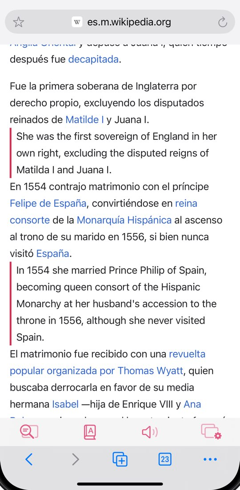
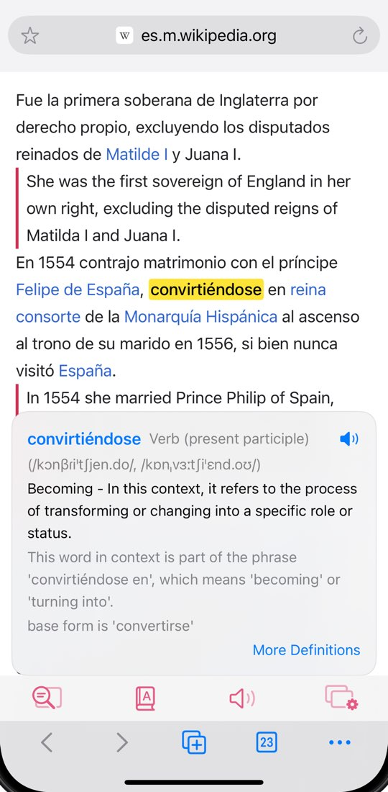
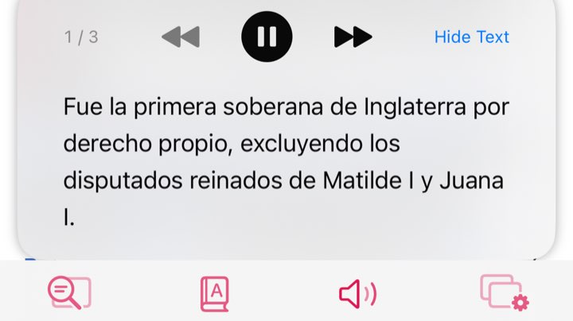
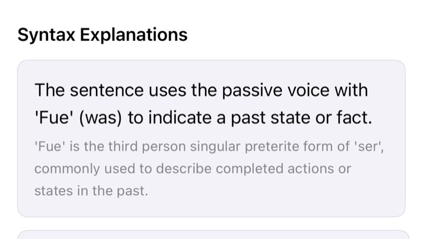
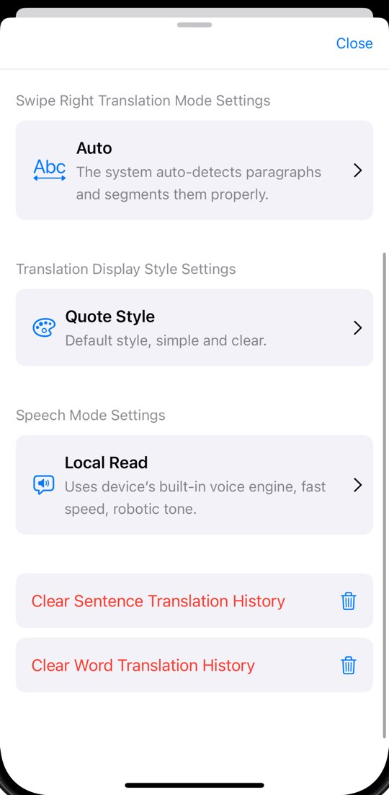
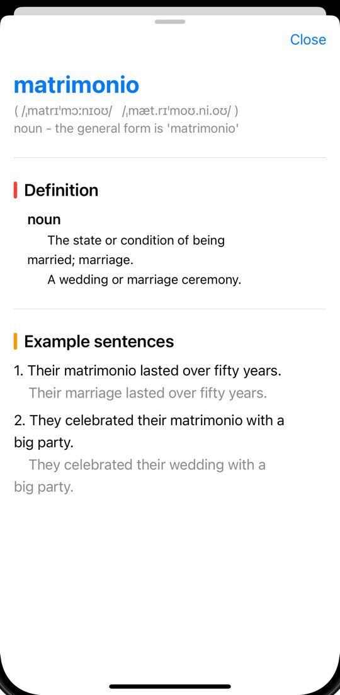
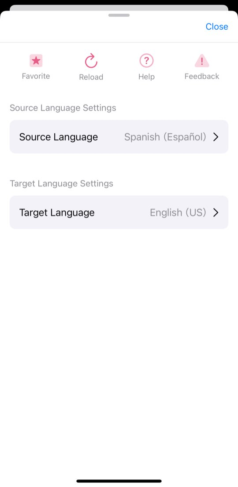
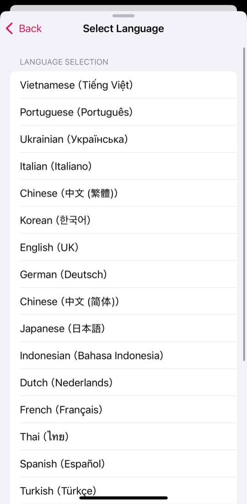

Acabo de terminar mi primera carrera de 10 km. Lenta, pero sin parar ni una vez.
Just finished my first 10K run. Slow, but I didn’t stop once.
WordByWord · Bilingual web reader for language learners
WordByWord is a reading assistant for language learners on iPhone and iPad.
Free download · iPhone & iPad
Los sábados en la biblioteca del barrio
La biblioteca del barrio abre temprano los sábados. Los vecinos llegan con café y se quedan leyendo hasta el mediodía.
The neighborhood library opens early on Saturdays. Neighbors arrive with coffee and stay reading until noon.
Open a site in its built-in browser and swipe right on a paragraph: the translation appears below it. Double-tap a word for an AI explanation of what it means there.
Free to start, with daily limits · Plus $3.99/month in the US · iOS 18 or later; also on Apple silicon Macs and Apple Vision Pro
Made for language learners who read real websites. Two gestures do most of the work; the rest is there when a sentence needs a closer look.
01 Swipe to Translate
Open a page in the built-in browser — type an address or search — and swipe right on a paragraph. The translation is inserted under it, so you read both without switching screens or losing your place.

02 Double-tap to Look Up
WordByWord reads the whole sentence before it explains a word, and checks for phrases first — so you get the sense that fits here, not a list of dictionary entries.
Note Not available for Chinese, Japanese or Korean source text.

Acabo de terminar mi primera carrera de 10 km. Lenta, pero sin parar ni una vez.
Just finished my first 10K run. Slow, but I didn’t stop once.
X (Twitter)
Sign in to x.com inside WordByWord and swipe right on a post to see its translation underneath — handy for following accounts that post in another language.
English pages English only
After you swipe-translate an English sentence, Chunk Extraction underlines the phrases that work as a unit, and Action Flow shows the sentence’s core action and the actions linked to it. Run them automatically, on tap, or switch them off.

Read aloud
Hear a word or a whole sentence. AI Read uses a natural-sounding cloud voice; Local Read uses the voices built into iOS — faster, with adjustable speed, and it can use Premium or Enhanced voices you have downloaded.

Syntax
Open a translated sentence from your swipe history and tap Get AI Syntax Explanation. It breaks the sentence into parts and explains how they fit together.
Cloud (Azure and Google) or iOS on-device; out of cloud swipes? Switch to local.
Auto, Paragraph or Sentence by Sentence; at once or on tap; several styles.
Translations and looked-up words are saved with their sentence; clear anytime.
iPhone and iPad (iOS 18+), Apple silicon Macs (macOS 15+) and Apple Vision Pro.




Choose the language you want translations in. WordByWord assumes English at first, detects the language of the page you’re reading and updates it — or you can set it yourself.
WordByWord is free to download. Most features have a free daily allowance that resets every day; WordByWord Plus raises it.
| Feature | Free | Plus$3.99 / month (US) |
|---|---|---|
| Translate | ||
| Swipe translation · cloud engine | 50 / day | 500 / day |
| Swipe translation · local engine | 100 / day | No daily limit |
| Look up | ||
| Double-tap lookup (AI meaning) | 20 / day | 500 / day |
| More Definitions | 10 / day | 500 / day |
| Listen | ||
| AI pronunciation · word | 10 / day | 200 / day |
| AI pronunciation · sentence | 10 / day | 100 / day |
| iOS voice (Local Read) | No daily limit | No daily limit |
| Sentence tools | ||
| Chunk Extraction English only | 30 / day | 500 / day |
| Action Flow English only | 20 / day | 500 / day |
| AI syntax explanation | 5 / day | 500 / day |
Every feature is free within these limits; Plus raises them for $3.99/month (US).
Prices vary by region and are shown in the App Store. You can cancel the subscription at any time in your Apple Account settings.
WordByWord is a reading assistant for language learners and anyone reading websites in another language, on iPhone and iPad. Open a page in its built-in browser, swipe right on a paragraph to insert the translation below it, and double-tap a word to see what it means in that sentence. It is made by an independent developer, Jinlong. More about WordByWord
No. WordByWord translates the paragraph you swipe and inserts the translation right below it; the rest of the page stays in the original language. You can show translations paragraph by paragraph or sentence by sentence (or let Auto decide), and choose whether they appear straight away or only when you tap.
No. WordByWord is not a Safari extension and does not add a translate button to other apps. It has its own browser with tabs and bookmarks: type a web address or search, then swipe to translate there.
Not in the literal sense. Translating one word at a time often misses the meaning, so WordByWord translates whole sentences or paragraphs and explains single words only when you double-tap them — in the context of the sentence they are in.
Yes. Open x.com in the built-in browser and sign in, then swipe right on a post to see its translation underneath, and double-tap a word to look it up (not available in Chinese, Japanese or Korean posts). This works with the X website inside WordByWord, not with the X app.
The app is available in 20 languages and translates into 21, including Simplified and Traditional Chinese and both US and UK English. The page language is English by default; WordByWord detects the language you are reading and updates it, and you can also change it by hand. Some features depend on that language: double-tap lookup does not work on Chinese, Japanese or Korean text, and Chunk Extraction and Action Flow work on English only.
Yes. WordByWord is free to download and use, with daily limits. The free plan includes, per day, 50 swipe translations with the cloud engine, 100 with the local engine, 20 double-tap lookups, 30 Chunk Extractions, 20 Action Flows and 5 AI syntax explanations; iOS voices have no daily limit. WordByWord Plus is a monthly subscription ($3.99 in the US; local prices are shown in the App Store) that raises these limits.
You choose. The cloud translation engine is currently backed by Azure and Google translation services. The local engine uses the translation built into iOS; the first time, iOS may need to download language resources. If you run out of cloud translations for the day, switch to the local engine and retry. Word explanations, syntax analysis and AI Read use AI services in the cloud.
No. WordByWord works without signing up. You only sign in to websites such as x.com inside its built-in browser, as you would in any browser. A WordByWord Plus subscription belongs to your Apple Account, not to a WordByWord account.
Use the same Apple Account on the new device. In WordByWord’s settings, tap Upgrade Now, then Restore Purchase. To change or cancel the subscription, use the subscription settings of your Apple Account.
No. WordByWord is available only on the App Store, for iPhone and iPad, Macs with Apple silicon and Apple Vision Pro.
Keep using WordByWord for the pages and X posts you choose, in English or any other language. If you would also like daily English news sorted by level (A1–C1) and games that review the sentences and words you have saved, SurfEnglish, from the same developer, adds that with the same swipe and double-tap. The two apps work side by side. SurfEnglish website
WordByWord runs on iPhone and iPad with iOS 18 or later, and from the App Store also on Macs with Apple silicon (macOS 15 or later) and on Apple Vision Pro. There is no version for desktop browsers yet; a Chrome extension from the same developer is in preparation — see the Chrome extension page.